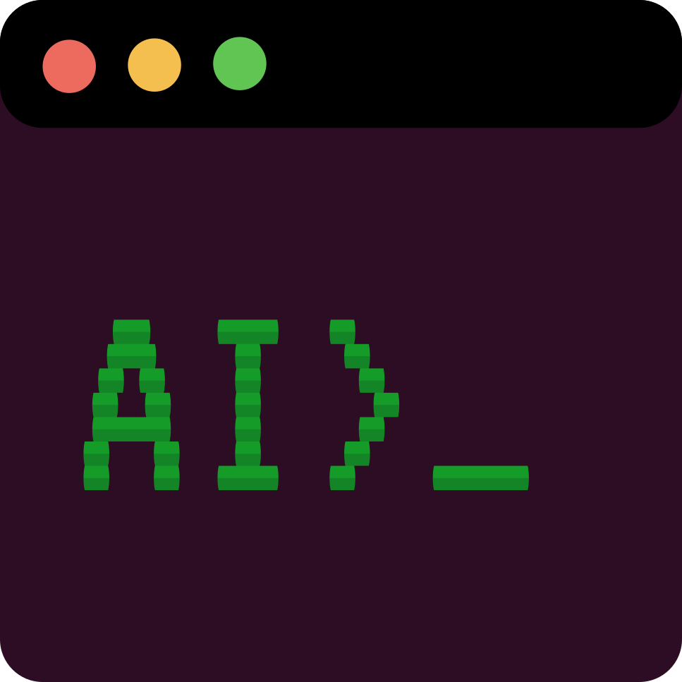

Natural language in. Structured commands out. Safety stays in control.
$ ashplug "find the five largest files here"
A focused AI shell assistant · Rust-powered · Provider-independent

MODEL proposesPOLICY decidesSHELL executes
01 / THE PROBLEM
Getting from intent to a safe command is hard.
01
Remembering syntax
Flags, quoting, pipelines, and paths turn a simple goal into a command-line puzzle.
02
Trusting generated commands
A plausible command can still have surprising effects when it runs with your permissions.
03
Keeping control
Convenience should not mean giving a model an unrestricted route to your shell.
ASHPLUG’s answer: make planning useful—and execution explicit, bounded, and inspectable.
02 / WHAT IT IS
A natural-language interface for the OS.
ASHPLUG is a focused Rust CLI and shell integration. Give it a task; it asks an AI provider for a structured plan, checks each proposed command, then runs only what policy allows.
Rust CLIBashZshOpenAI-compatibleOllama
request → result
$ ashplug "show the largest files here"
Plan
Find files and sort by size
Safety
find allow
sort allow
Result
1. ./archive.tar.gz 842 MB
2. ./database.dump 317 MB
3. ./video.mp4 208 MB
Illustrative example · exact plan depends on provider and environment
03 / THE KEY DISTINCTION
The AI proposes. ASHPLUG decides.
AI PROVIDERProposesStructured plan
→
RUST CONTROL PLANEValidates · classifies · approvesPolicy cannot be changed by the model
→
OPERATING SYSTEMExecutesOne command at a time
!
Model output is untrusted input. It must become a typed plan and pass the safety engine before execution.
04 / REQUEST LIFECYCLE
From a sentence to a recorded outcome.
01RequestCLI or Bash/Zsh hook
02PlanProvider returns structured JSON
03ValidateParse types, enforce bounds
04AssessAllow · approval · deny
05ExecuteDirect process, timeout, bounded output
06LearnRecord results; replan if needed
Replanning is bounded. Failed commands can produce observations for a revised plan—but never bypass safety checks.
05 / PLANNING + PROVIDERS
Bring a model. Keep the workflow.
01
OpenAI-compatibleRemote APIs and compatible endpoints
HTTP
02
OllamaConnect to a local Ollama server
LOCAL
03
MockDeterministic responses for tests and demos
OFFLINE
Your task→Planner prompt→Provider→JSON plan
Configurable model, endpoint, timeout, retries, and optional secondary-provider fallback.
The planner validates the plan; provider choice does not change the safety policy.